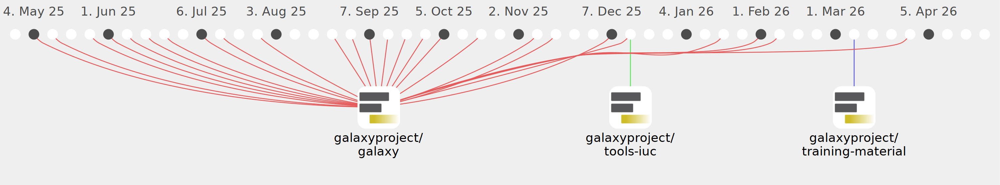

jdavcs

Commits all-time: 3644
Commits last year: 611

(602)
- 377d7d1
- 1f9ee93
- a8a2903
- c6dad0b
- 7d6a0ee
- 658bec9
- 52d7fa7
- 7510325
- 937292d
- 3c4543b
- fb018c5
- ecd6c36
- 03597bb
- c8012df
- 61c463f
- 5597d9f
- 5a3b165
- 5220d94
- b4428b5
- 8f7ee7d
- 5ba634b
- cb01378
- cf53c05
- d1d8b08
- 9bae0a0
- e24ed35
- a4d0c33
- c744ca3
- 34fd0bd
- 00fc1ee
- b9ba44b
- 3c5c4f7
- 064360d
- 2e9c224
- 9f4254f
- 1a26f75
- a747688
- 72b8885
- 582b850
- 1148df4
- be47f4d
- 4052b1b
- 1cb3703
- 26fb60d
- c855b1e
- c4e3c94
- 568480f
- 4d325b1
- 22266bf
- 1a24935
- dc7b002
- 3aae92b
- fb41f4f
- 9a3877f
- 527134e
- 5c27fe1
- 79261dd
- 511816e
- 78aa970
- 92b9521
- 92cf377
- 85d54c6
- 2254054
- 7281000
- 6f7f8b0
- d93d7e2
- fd1baee
- d47ec41
- 5d17b27
- 8afb02d
- 4f17324
- cab3fda
- fe2fd22
- 862b2e8
- 9c593cd
- a1088bc
- e134e8b
- bd6757d
- 64b945d
- 6880480
- adf175f
- c1081c3
- 7df2d78
- 8732e0d
- a354d12
- 7929d83
- 2783fb6
- 01402e2
- 2337c9c
- c2c3154
- 121e38d
- b83073f
- ac15c87
- 3ce1a75
- 019c495
- 2002076
- f1579e1
- 7c2a1a4
- 58c35c2
- e3a695c
- dd6a8c0
- 92199f3
- a6162ed
- 82f8438
- 3fb0c9c
- b146837
- 4255c15
- 78a77d9
- b3cef4f
- eb46a08
- f3740c6
- c1f0aad
- 7bffadb
- 8884dfa
- 47dffaf
- cae92b7
- 05a5b01
- 6815239
- bf60ea9
- c5b8b7e
- cc87d06
- e3305a3
- 72dcc40
- f9cebc6
- 3e5c46b
- 0e61d61
- 28fd6ad
- cc23a9d
- 3308279
- b83b8bb
- e0baa03
- 00dd726
- 6a800c0
- 3c74f9d
- 631b504
- 877b5f6
- 3c6fb7e
- cb06b04
- f0fbe77
- 49e0d43
- fe93fd8
- 7b57bf4
- b1ef5c1
- e50c615
- 03c1f91
- f52d35b
- 6a0c4c8
- d5bfe05
- 51749bf
- 874cd96
- f43c6b1
- 1f08249
- 4cc9a7a
- f3b75e2
- 2e0ec6f
- 7ad6d43
- ff66f47
- 477e072
- 4fdc7c6
- b6dcf9c
- 2c966de
- 25d9527
- 54294f0
- 021cb80
- d02c11a
- 516ecfa
- ece45e3
- 89db9c2
- ac9a6b4
- fab4424
- 5ff2481
- 075ad21
- 04a8011
- 4c4dac9
- d70b8db
- 9572a93
- 415f419
- dc2621b
- 0739b13
- 5e05e00
- fb89a26
- 149e281
- 49e0970
- 03b6c39
- ccb3043
- 446e012
- 0550e76
- 7060791
- 1a4d6e6
- da3c885
- 2d4a65d
- 23ae962
- c8df2fd
- 47a8bf7
- 83e124f
- e7d4270
- 5123c39
- 65530c9
- 53c2bc7
- 1d7d655
- fd29aab
- 8e75d32
- 09fee6a
- ae432bd
- ee06700
- a5c18ee
- 9e38d4b
- 71d2ca9
- ee47b93
- 020dca1
- 728bbeb
- 5d42bdb
- c5e0b54
- 0a52e94
- dfe7508
- ec4ce21
- d7a8a67
- 799fde4
- e35d017
- 81753fb
- 8eb5967
- 7af9c3d
- ec1dc96
- 86d1d2b
- 28f2063
- cdb5110
- 9e6382c
- 480ec69
- 6a34031
- 93ff028
- b36372d
- 98b3636
- 0d70005
- 65a860b
- a941f40
- 96d1dc2
- 89d4f9c
- aa715e4
- 86b4345
- b9c94ce
- 4857324
- f07a6f2
- a8f2f2c
- 1c4b114
- 99f31df
- 7284e3e
- 2c527d4
- 098ec92
- a129b65
- feeb74a
- 124ee9c
- 33505f7
- a21c219
- 119aaa0
- a7f310c
- 1df0373
- 9501826
- c0b81c4
- 4bb7dd0
- af53d03
- dcf2d84
- cbdb19d
- 0076ba2
- 9758720
- 89ac780
- 161f4a9
- 5adc34f
- 6700809
- 828efec
- 9feec89
- a51c8b1
- db7d7e3
- dc8e8e7
- 58490e5
- 6c20268
- e5f422d
- e4bad49
- edf31eb
- bf62b25
- 53654e8
- 35149a0
- 65de14a
- cc76654
- 6bd8b81
- b4073e1
- 0a1d3d3
- de054fb
- a451979
- 54d2476
- a8d8dea
- 48c4d1a
- e32c857
- cdc7c99
- 985c2f6
- 3a8ae72
- d29d5c2
- 21b24dd
- fb32618
- ee12720
- b751546
- ddf0da1
- f9f9a68
- 8f02426
- da55f4a
- 585d911
- e7873d8
- 41d3054
- 78b2da5
- d76ac54
- d9878d1
- 9e40868
- 8304449
- ce1cc2c
- 61fc667
- e96b00c
- 82a0ef4
- 14ec017
- eb472db
- 8354154
- 5d6db06
- 372b8d6
- 71b9e4b
- 0dd284a
- b60bbbd
- 6f3e515
- 0c840d0
- fd71792
- b8e05af
- fabce5b
- 4329a5e
- 558d836
- 51ffbfd
- 0712fbf
- f1b934b
- 4aaed3e
- 49e46c5
- b356b0c
- 972f918
- 7ec1311
- c31bccf
- ee64fc4
- b32480c
- 645ff00
- b5a93f0
- b798109
- 90bb4c9
- ac8338f
- f98f6f7
- b97825b
- 724e795
- 9ef2c39
- 7d1da18
- 76c8003
- 2652ec6
- 1773dca
- 7f83b90
- 2d9f78f
- fa2afe8
- dcf8207
- 77240b7
- f70d556
- 48771a9
- 37e7d87
- 0045692
- 880f3ef
- f2ddaa4
- f218a39
- 54bb8a9
- 9e78069
- 594f702
- 77d8d61
- e1815c3
- 3904681
- 076f298
- fb29f2f
- 5c0901c
- ca08db6
- f2317ad
- 1c90246
- e46bed1
- 036bf47
- f3cb81d
- 9b6268b
- 177afd4
- 396797d
- 397b575
- d6d3aa5
- 2514dee
- 4555b91
- 9c6caf3
- 0c964b8
- 529ec35
- b06016d
- cc11165
- e362670
- d827955
- 1760625
- 0d533da
- 0a0b2f6
- 3db050e
- 463be31
- e22c92d
- 260dc9b
- bf0c334
- bea1583
- 04e77ef
- 89b07fa
- a047ea0
- 1c11fe1
- c2516bb
- a774c92
- d0d16eb
- dbd063e
- 15a8e6c
- 4030c70
- 05eecfc
- 4dda05f
- bad3f8a
- 534f933
- 7a9148b
- 579884d
- 29cd573
- 6c998ad
- 4772bbb
- 60787f8
- 9753a0b
- f91bd11
- bc6fb89
- 35a758b
- bf60526
- d4a4b91
- bbb10cb
- 189184e
- 9d15f2f
- 5b4268c
- d0414c3
- cea7eb0
- b2bbdcb
- 8351709
- 13de716
- cf1fc55
- 1ada04a
- c7bafb1
- e0aacbd
- 7151130
- b3ca95a
- 7b5f924
- 51309da
- 4ba1ee5
- 4fd73fc
- f3ff434
- a995057
- 6ff611f
- 1b8fec5
- 1dcb564
- beb2820
- 77dbd47
- b8c21c4
- 1870b23
- acb2166
- b1b0769
- 4e3af82
- fffaf74
- f8fad72
- 32417ab
- 6dc2dc7
- 9838c16
- b460524
- bed5895
- 2a2c1a8
- 9a3af33
- 25827fb
- 82b482b
- 4239fe1
- b0d4faf
- c774caf
- 4709165
- 7721bf3
- 414bc64
- d6134fd
- 940a87c
- 922e2c8
- 4c3a425
- 329aa93
- 90f298b
- bacc304
- 07c0b2d
- 527b371
- 443640f
- 3a2bc2c
- bef3888
- 886cd1b
- 004d46c
- 4fb1c70
- b89c208
- 7739134
- 99afd7b
- b4ebfca
- 4ce44cf
- b9ac9f7
- 6c2125a
- 19d76e9
- f6763a5
- 4b95955
- 8c4a900
- 6c4ddeb
- d0d0838
- 8900779
- 332550a
- 49485c8
- cfaef6f
- da6a7a7
- ef9a5db
- 552354c
- e839b39
- 175423c
- e3e8856
- 2fc21f9
- e25f5e0
- 356b8c3
- 505cd87
- 0e4559f
- 4a85cb3
- b261dea
- d8abcad
- 11a25ae
- 600523b
- 4471c6a
- 87573ee
- 0607d2e
- a509bf8
- 5524ea7
- 5d5065a
- e49c21a
- f420f53
- 03641a9
- b57ec18
- 93b22b0
- 1860e88
- 6dace47
- 9291652
- 98044ad
- af56338
- ad6d973
- 8b83424
- 00bebee
- 806fe96
- c0f4ba1
- de8e982
- 87cddaf
- ada740e
- 6ea4934
- 4186c48
- 2fce86e
- f8c751a
- e255a38
- bc3ed51
- 1eac67a
- 0e51a52
- 62a8b90
- 3e6191f
- f623ee8
- a58c417
- 061aa88
- 16f1d3f
- 4a7eb0a
- 6c59904
- 4be1eaf
- f89c1d7
- 0761269
- b3e57cb
- ff20d0d
- 16f7700
- 725c120
- df850ac
- 3523f02
- 9834ecd
- e5635dc
- f2fe4c5
- 51a4ab2
- 02a1d6a
- 7f513fd
- 784b5f2
- d2583bb
- 85a94a8
- 639baaf
- f15548f
- 1e3d2b6
- 8cdd254
- 2473db0
- 8c4d815
- 978bf09
- 0390a8b
- 16a7da8
- 1cdde37
- 191de77
- 6bc9940
- d59f7a6
- f47df34
- 963ae52
- 5ee4dfb
- 16fe9c5
(5)
(3)
(1)